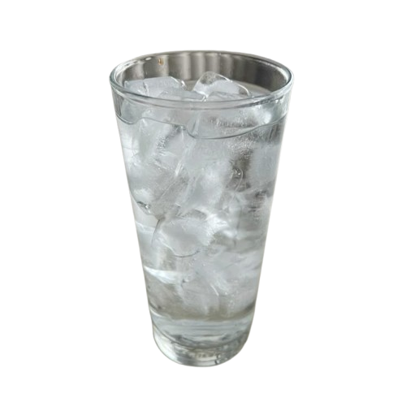
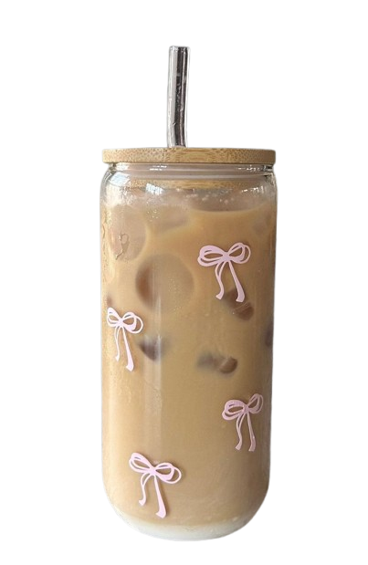
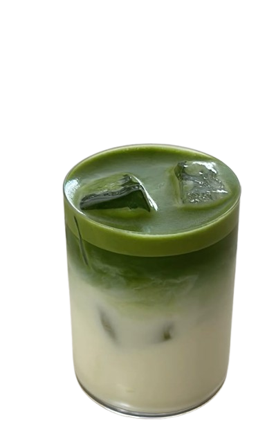
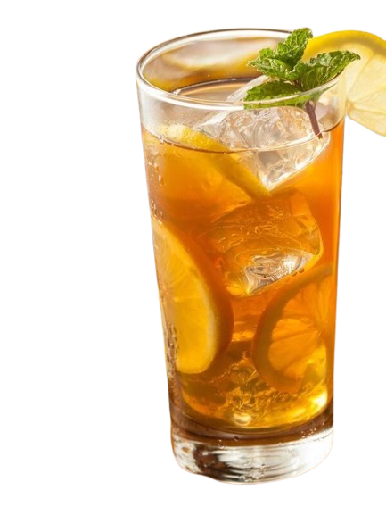

|  | Es Campa: Minuman tanpa rasa tapi paling favorite setelah makan uty 🧊 |
|  | Coffee: Kopi bikin susah tidur tapi tetep diminum karena enak ☕ |
|  | Matcha: Minuman hijau yang rasanya khas, uty suka banget kaya orang Jepang 🍵 |
|  | Lemon Tea: Manis asem seger, bikin mood jadi happy lagi 🍋 |